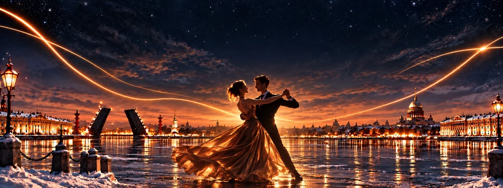
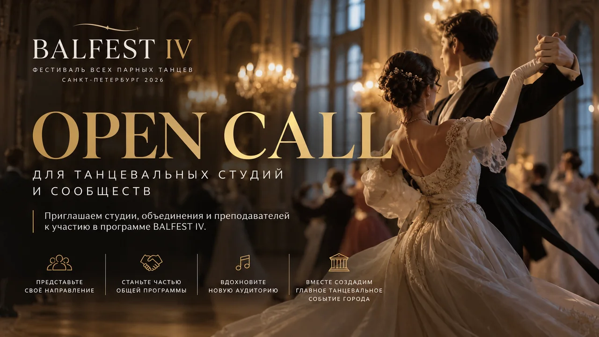

Ещё не танцую
Сделать первый шаг, почувствовать музыку и открыть направление, в которое захочется вернуться.

Фестиваль всех направлений парного танца
Весь мир парного танца
за один день.
А чтобы открыть ещё больше — три дня фестиваля. Разные танцы, музыка и сообщества Петербурга. Найдите то, что близко именно вам.
Художественная иллюстрация · рабочая визуальная концепция
01 / О фестивале
БАЛФЕСТ знакомит с миром парного танца и людьми, которые создают его в Петербурге.
Танцевальные студии, школы, преподаватели и сообщества сами создают программу — каждое представляет культуру своего направления. Вместе они собирают её в общий фестиваль.
Гости могут увидеть разные танцы, попробовать новые движения, познакомиться с преподавателями и найти своё танцевальное сообщество. Начать можно с любопытства.
Найдите свой танцевальный мирСделать первый шаг, почувствовать музыку и открыть направление, в которое захочется вернуться.
Встретить другие сообщества, выйти за пределы привычного стиля и расширить свой танцевальный мир.
Провести время с близкими и познакомиться с живой танцевальной культурой Петербурга.
02 / Мир парного танца
Разные культуры. Общее движение.От вальса до бачаты.
Откройте направление и узнайте, что делает его особенным.
Парные танцы разных эпох: музыка, взаимодействие и традиции исторической бальной культуры.
Вальсы, польки и другие парные танцы отечественной бальной программы — знакомство с её музыкой и характером.
Европейская и латиноамериканская программы: выразительное движение, взаимодействие в паре и танцевальная техника.
Музыка джаза, импровизация и удовольствие от совместного движения. Мир свинговых танцев и его сообществ.
Музыка, ритм и взаимодействие в паре. Одно из направлений современной культуры социальных танцев.
Внимание к партнёру, музыка и импровизация: каждый танец становится собственным диалогом пары.
Разные народные танцевальные культуры, объединённые музыкой, общением и совместным движением.
Социальная танцевальная культура с опорой на европейские народные традиции. Парные и общие танцы.
Это мир направлений БАЛФЕСТ. Состав программы 2026 года и участвующие студии будут опубликованы после подтверждения.
03 / 4–6 декабря 2026
Программа формируетсяТри дня для знакомства с танцевальной культурой города. Расписание, часы входа и состав участников объявим после утверждения.
Программа формируется
Программа формируется
Программа формируется
Адрес и информация о проезде появятся после подтверждения.
04 / Участие в программе · Open Call
Для студий, преподавателей, коллективов и танцевальных сообществ. Расскажите о своём направлении и предложите формат участия в фестивале.
Представьтесь, опишите вашу идею, возможный состав и длительность. Условия участия и актуальность набора уточняйте у организаторов.
Обсудить участие в VK
05 / Гостям фестиваля
Цены, категории билетов и билетный оператор будут опубликованы после утверждения.
06 / Партнёрам
Идеи, которые встречаютсяПриглашаем обсудить сотрудничество с культурным фестивалем Петербурга. Найдём формат, который подходит вашему бренду и гостям БАЛФЕСТ.
07 / Перед встречей
Да. БАЛФЕСТ — пространство знакомства с танцем. Можно увидеть разные направления, попробовать движения и познакомиться с преподавателями. Форматы и уровень занятий укажем в программе после её утверждения.
4–6 декабря 2026 года в Санкт-Петербурге. Площадка будет объявлена. Адрес и информация о проезде появятся после подтверждения.
Следите за программой и билетными категориями: они будут опубликованы после утверждения. Сейчас даты фестиваля — 4–6 декабря, а правила посещения отдельных дней ещё не объявлены.
Требования к участию зависят от формата конкретного блока. После утверждения программы укажем, где можно участвовать одному, а где потребуется пара.
Следите за официальным сообществом БАЛФЕСТ в VK. Здесь также появится ссылка на утверждённую билетную систему.
Свяжитесь с организаторами через официальное сообщество в VK. Коротко расскажите о себе, своём направлении или идее сотрудничества.